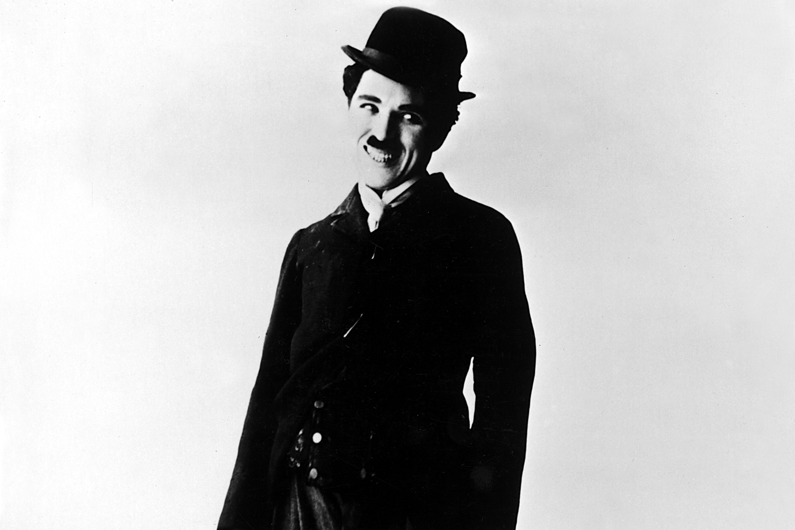

Sir Charles Spencer Chaplin
"Nothing is permanent in this wicked world - not even our trouble"

a Picture of Charlie Chaplin smiling
Here's a time line of Charlie Chaplin life:
- 1889 - Born in Malworth, London, England.
- 1914 - He was scouted for the film industry and began appearing for Keystone Studios.
- 1918 - He soon developed the Tramp persona and formed a large fan base. He directed his own films and continued to hone his craft as he moved to the Essanay, Mutual, and First National corporations.By this time, he was one of the best-known in the world.
- 1919 - Chaplin co-founded the distribution company United Artists, which gave him complete control over his films.
- 1930's - He initially refused to move to sound films in the 1930s, instead producing City Lights (1931) and Modern Times (1936) without dialogue.
- 1940's - Were a decade marked with controversy for Chaplin, and his popularity declined rapidly. He was accused of communist sympathies, and some members of the press and public found his involvement in a paternity suit, and marriages to much younger women, scandalous. An FBI investigation was opened, and Chaplin was forced to leave the United States and settle in Switzerland. He abandoned the Tramp in his later films, which include Monsieur Verdoux (1947), Limelight (1952), A King in New York (1957), and A Countess from Hong Kong (1967).
- 1972 - He received an Honorary Academy Award for "the incalculable effect he has had in making motion pictures the art form of this century", as part of a renewed appreciation for his work.
- 1977 - dies at the age of 88.